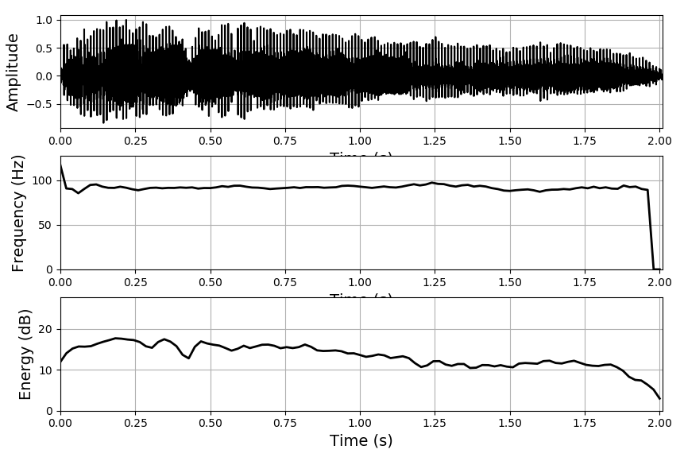

Phonation features¶
{kind=link}
Created on Jul 21 2017
@author: J. C. Vasquez-Correa
-
class
phonation.Phonation¶ Compute phonation features from sustained vowels and continuous speech.
For continuous speech, the features are computed over voiced segments
Seven descriptors are computed:
- First derivative of the fundamental Frequency
- Second derivative of the fundamental Frequency
- Jitter
- Shimmer
- Amplitude perturbation quotient
- Pitch perturbation quotient
- Logaritmic Energy
Static or dynamic matrices can be computed:
Static matrix is formed with 29 features formed with (seven descriptors) x (4 functionals: mean, std, skewness, kurtosis) + degree of Unvoiced
Dynamic matrix is formed with the seven descriptors computed for frames of 40 ms.
Notes:
- In dynamic features the first 11 frames of each recording are not considered to be able to stack the APQ and PPQ descriptors with the remaining ones.
- The fundamental frequency is computed the RAPT algorithm. To use the PRAAT method, change the “self.pitch method” variable in the class constructor.
Script is called as follows
>>> python phonation.py <file_or_folder_audio> <file_features> <static (true or false)> <plots (true or false)> <format (csv, txt, npy, kaldi, torch)>
Examples command line:
>>> python phonation.py "../audios/001_a1_PCGITA.wav" "phonationfeaturesAst.txt" "true" "true" "txt" >>> python phonation.py "../audios/098_u1_PCGITA.wav" "phonationfeaturesUst.csv" "true" "true" "csv" >>> python phonation.py "../audios/098_u1_PCGITA.wav" "phonationfeaturesUdyn.pt" "false" "true" "torch"
>>> python phonation.py "../audios/" "phonationfeaturesst.txt" "true" "false" "txt" >>> python phonation.py "../audios/" "phonationfeaturesst.csv" "true" "false" "csv" >>> python phonation.py "../audios/" "phonationfeaturesdyn.pt" "false" "false" "torch"
Examples directly in Python
>>> from disvoice.phonation import Phonation >>> phonation=Phonation() >>> file_audio="../audios/001_a1_PCGITA.wav" >>> features=phonation.extract_features_file(file_audio, static, plots=True, fmt="numpy") >>> features2=phonation.extract_features_file(file_audio, static, plots=True, fmt="dataframe") >>> features3=phonation.extract_features_file(file_audio, dynamic, plots=True, fmt="torch")
>>> path_audios="../audios/" >>> features1=phonation.extract_features_path(path_audios, static, plots=False, fmt="numpy") >>> features2=phonation.extract_features_path(path_audios, static, plots=False, fmt="torch") >>> features3=phonation.extract_features_path(path_audios, static, plots=False, fmt="dataframe")
-
extract_features_file(audio, static=True, plots=False, fmt='npy', kaldi_file='')¶ Extract the phonation features from an audio file
Parameters: - audio – .wav audio file.
- static – whether to compute and return statistic functionals over the feature matrix, or return the feature matrix computed over frames
- plots – timeshift to extract the features
- fmt – format to return the features (npy, dataframe, torch, kaldi)
- kaldi_file – file to store kaldi features, only valid when fmt==”kaldi”
Returns: features computed from the audio file.
>>> phonation=Phonation() >>> file_audio="../audios/001_a1_PCGITA.wav" >>> features1=phonation.extract_features_file(file_audio, static=True, plots=True, fmt="npy") >>> features2=phonation.extract_features_file(file_audio, static=True, plots=True, fmt="dataframe") >>> features3=phonation.extract_features_file(file_audio, static=False, plots=True, fmt="torch") >>> phonation.extract_features_file(file_audio, static=False, plots=False, fmt="kaldi", kaldi_file="./test")
-
extract_features_path(path_audio, static=True, plots=False, fmt='npy', kaldi_file='')¶ Extract the phonation features for audios inside a path
Parameters: - path_audio – directory with (.wav) audio files inside, sampled at 16 kHz
- static – whether to compute and return statistic functionals over the feature matrix, or return the feature matrix computed over frames
- plots – timeshift to extract the features
- fmt – format to return the features (npy, dataframe, torch, kaldi)
- kaldi_file – file to store kaldifeatures, only valid when fmt==”kaldi”
Returns: features computed from the audio file.
>>> phonation=Phonation() >>> path_audio="../audios/" >>> features1=phonation.extract_features_path(path_audio, static=True, plots=False, fmt="npy") >>> features2=phonation.extract_features_path(path_audio, static=True, plots=False, fmt="csv") >>> features3=phonation.extract_features_path(path_audio, static=False, plots=True, fmt="torch") >>> phonation.extract_features_path(path_audio, static=False, plots=False, fmt="kaldi", kaldi_file="./test.ark")
-
plot_phon(data_audio, fs, F0, logE)¶ Plots of the phonation features
Parameters: - data_audio – speech signal.
- fs – sampling frequency
- F0 – contour of the fundamental frequency
- logE – contour of the log-energy
Returns: plots of the phonation features.